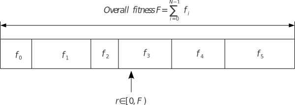

Module io.jenetics.base
Package io.jenetics
Class ProbabilitySelector<G extends Gene<?,G>,C extends Comparable<? super C>>
java.lang.Object
io.jenetics.ProbabilitySelector<G,C>
- All Implemented Interfaces:
Selector<G,C>
- Direct Known Subclasses:
BoltzmannSelector,ExponentialRankSelector,LinearRankSelector,RouletteWheelSelector
public abstract class ProbabilitySelector<G extends Gene<?,G>,C extends Comparable<? super C>>
extends Object
implements Selector<G,C>
Probability selectors are a variation of fitness proportional selectors and
selects individuals from a given population based on its selection
probability P(i).

Fitness proportional selection works as shown in the figure above. The runtime complexity of the implemented probability selectors is O(n+log(n)) instead of O(n2) as for the naive approach: A binary (index) search is performed on the summed probability array.
- Since:
- 1.0
- Version:
- 4.0
-
Field Summary
FieldsModifier and TypeFieldDescriptionprotected final Function<double[],double[]> protected final booleanprotected final Comparator<Phenotype<G,C>> -
Constructor Summary
ConstructorsModifierConstructorDescriptionprotectedCreate a new selector withsorted = false.protectedProbabilitySelector(boolean sorted) Create a newProbabilitySelectorwith the givensortingflag. -
Method Summary
Modifier and TypeMethodDescriptionprotected abstract double[]probabilities(Seq<Phenotype<G, C>> population, int count) Return an Probability array, which corresponds to the given Population.protected final double[]This method takes the probabilities from theprobabilities(Seq, int)method and inverts it if needed.Select phenotypes from the Population.
-
Field Details
-
POPULATION_COMPARATOR
protected final Comparator<Phenotype<G extends Gene<?,G>, POPULATION_COMPARATORC extends Comparable<? super C>>> -
_sorted
-
_reverter
-
-
Constructor Details
-
ProbabilitySelector
Create a newProbabilitySelectorwith the givensortingflag. This flag must set totrueif the selector implementation is sorting the population in theprobabilities(Seq, int)method.- Parameters:
sorted-trueif the implementation is sorting the population when calculating the selection probabilities,falseotherwise.
-
ProbabilitySelector
protected ProbabilitySelector()Create a new selector withsorted = false.
-
-
Method Details
-
select
Description copied from interface:SelectorSelect phenotypes from the Population.- Specified by:
selectin interfaceSelector<G extends Gene<?,G>, C extends Comparable<? super C>> - Parameters:
population- The population to select from.count- The number of phenotypes to select.opt- Determines whether the individuals with higher fitness values or lower fitness values must be selected. This parameter determines whether the GA maximizes or minimizes the fitness function.- Returns:
- The selected phenotypes (a new Population).
-
probabilities
This method takes the probabilities from theprobabilities(Seq, int)method and inverts it if needed.- Parameters:
population- The population.count- The number of phenotypes to select.opt- Determines whether the individuals with higher fitness values or lower fitness values must be selected. This parameter determines whether the GA maximizes or minimizes the fitness function.- Returns:
- Probability array.
-
probabilities
Return an Probability array, which corresponds to the given Population. The probability array and the population must have the same size. The population is not sorted. If a subclass needs a sorted population, the subclass is responsible to sort the population.
The implementer always assumes that higher fitness values are better. The base class inverts the probabilities, by reverting the returned probability array, if the GA is supposed to minimize the fitness function.- Parameters:
population- The unsorted population.count- The number of phenotypes to select. This parameter is not needed for most implementations.- Returns:
- Probability array. The returned probability array must have the
length
population.size()and must sum to one. The returned value is checked withassert(Math.abs(math.sum(probabilities) - 1.0) < 0.0001)in the base class.
-